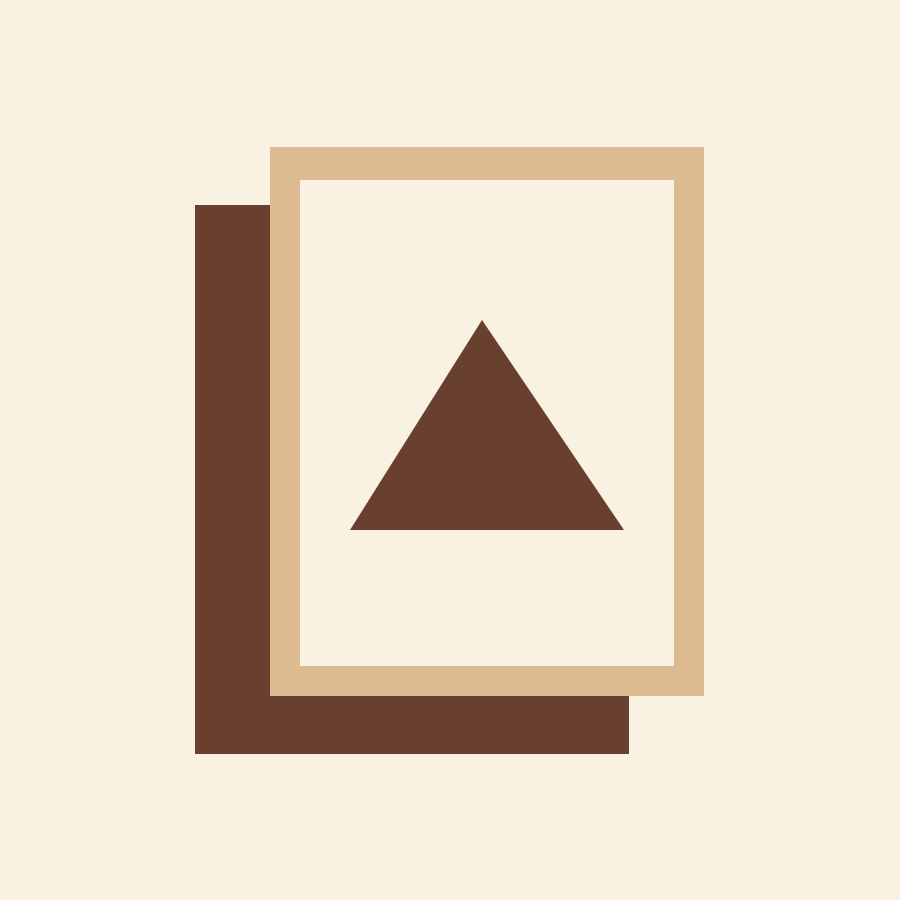
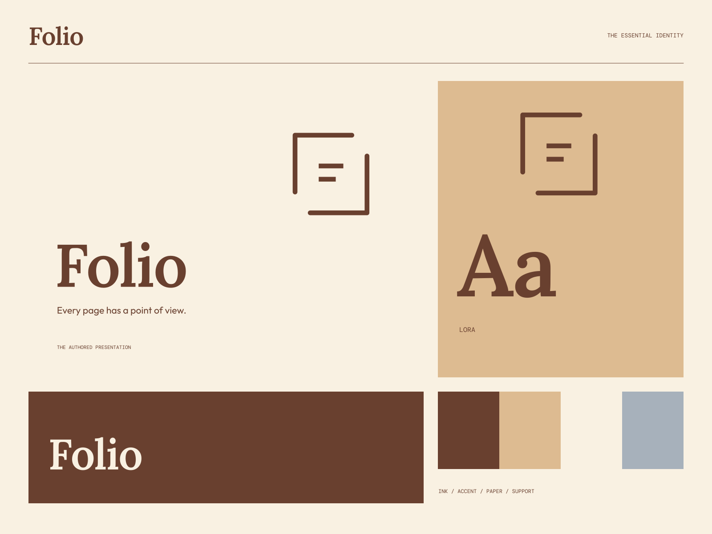

01
A place for the work
A clear, considered presentation that lets an idea be understood.
WORK / WORDS / INDEPENDENT PERSPECTIVE
Every page has a point of view. A thoughtful place for an individual voice.

A coherent little world
A thoughtful place for an individual voice. Every page has a point of view.
01
A clear, considered presentation that lets an idea be understood.
02
Room for context, process, and the person who made it.
03
Work worth returning to, not just scrolling past.

The point of view
Folded portfolio sheets, considered page corners, warm print-stock contrast, and high-character serif display. The work and its author stay at the center.